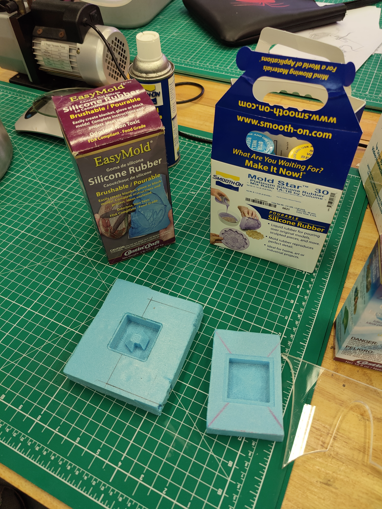
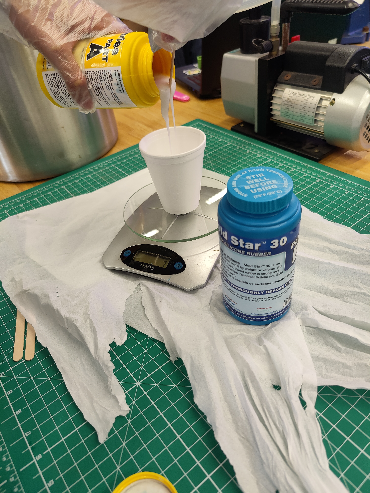
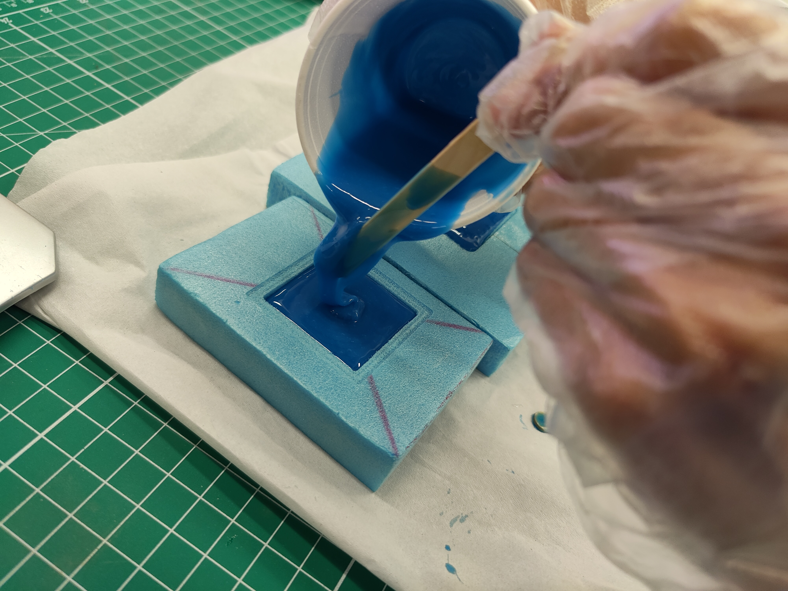
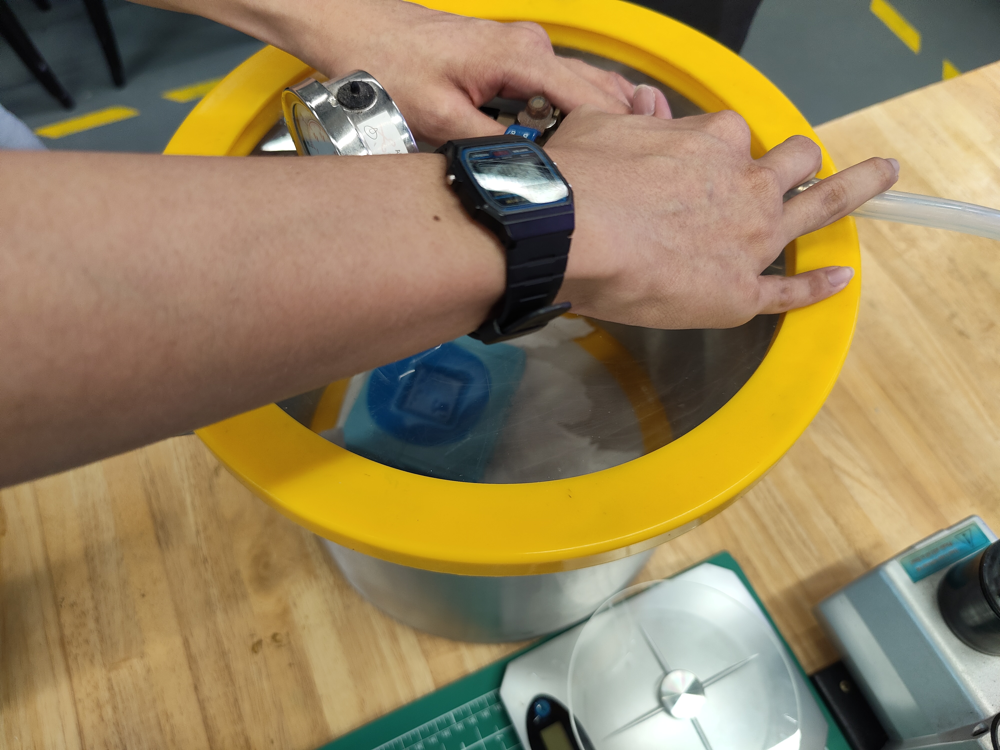
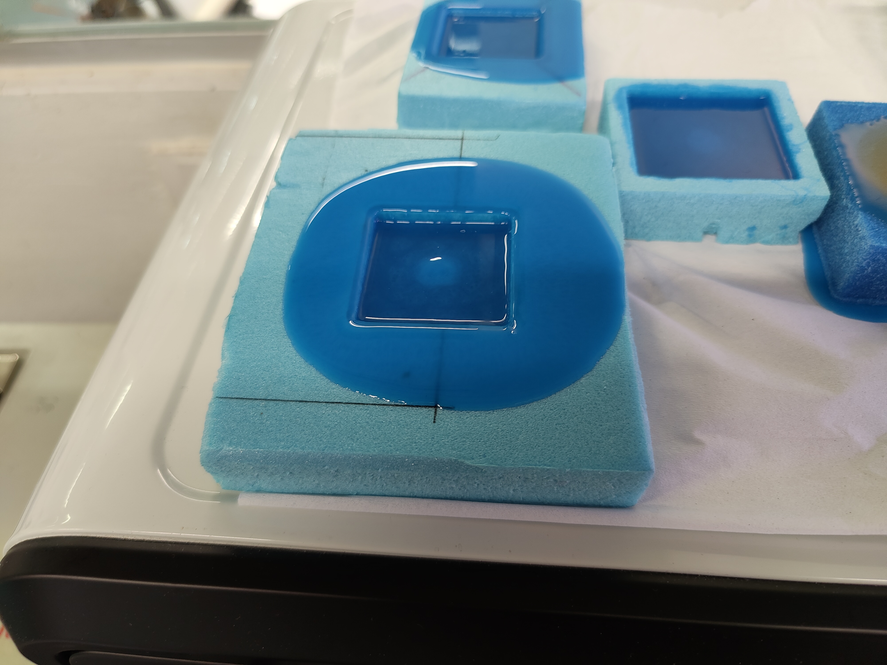
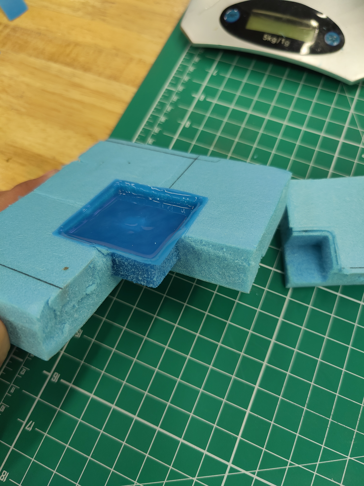
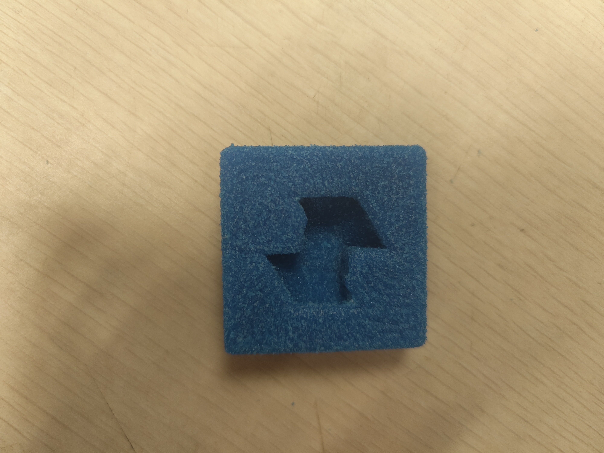
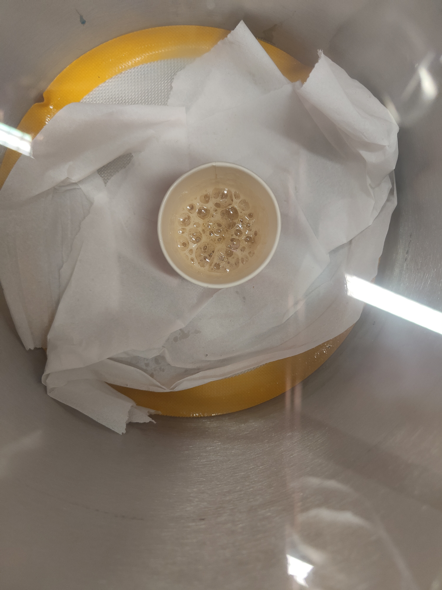

In molding and casting , we will be making use of the mold that we have made from cnc to form a silicone mold out of it and eventually cast our design out of resin.
Firstly would be making the mold out of silicone. We will be using smooth on.
Next, we willl coat the inside of the mold with a layer of quick release for easy removal in the future. Next we will be measuring the silcone and solidifyer in a 1:1 ratio on the weighing scale.
Next, we will stir the mixture throughly until it is mixed well together. We will then pour it into each of our individual molds and prep them by placing them inside the Vacuum chamber.
 The goal of putting it into the Vacuum chamber is to suck all of the air traped under the silicone so that when we get our mold, there won't be any holes on it. THe vaccum chamber is set to a pressure of 1 bar as we held the lid for about 10 minutes before the bubbles stopped forming on the surface.
We would then allow the silicone to set for 1 day before opening it up and releasing it from the styrofoam. This is the finished mold.
 Now with the mold in hand, we can get on to casting our design using the mold. Casting is similar in terms of steps to molding. As firstly , we have to spray a layer of quick release on our mold. Next, we will measure out hardener to resin in a 1:3 ratio and stir throughly until fully mixed. This time however, we shall place the whole cup insdie the vacuum chamber and set it to 1 bar of pressure. This time, alot more bubbles formed and after its completion, we can see that it became almost transparent.
After taking it out, we carefully poured it into our molds and let it set for another day. This is what I ended up with.